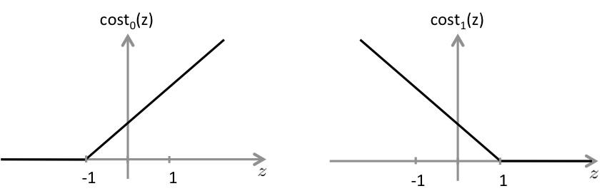

第 56 题
假设您使用训练了一个高斯内核的支持向量机，它在训练集上学习了以下决策边界： 你觉得支持向量机欠拟合了，你应该试着增加或减少C吗？或者增加或减少σ²？
你觉得支持向量机欠拟合了，你应该试着增加或减少C吗？或者增加或减少σ²？
查看答案与解析
答案 D
C 越大，训练误分的相对代价越高；σ² 越小，高斯核对局部距离越敏感，边界可更灵活。题目给定欠拟合，D 同时沿这两个方向试调。A 反向，B、C 各只调对一个方向。
如果能画好几条线把两类点分开，哪条更合适？支持向量机（SVM）希望边界离最近的点也有一定距离。
SVM 可用得分 z=θᵀx 判断哪一类。z=0 是分界。题目的标签用 1 表示正类、0 表示负类，正类得分达到 1、负类得分低至 −1 就不受间隔损失。
正类损失 = max(0, 1−z) 负类损失 = max(0, 1+z)这里 max 是取较大的数。即使正类得分 0.4 已在正确一侧，损失仍为 0.6，因为距离还不够。软间隔允许一些点进入间隔或分错，C 控制这些训练损失相对参数惩罚的重要性。
K(x, ℓ) = exp(−‖x−ℓ‖²/(2σ²))x 是当前样本，ℓ 是参考点，‖x−ℓ‖² 是对应坐标差的平方和，exp(t) 是 e 的 t 次方，σ² 控制核宽度。x=ℓ 时相似度为 1；离参考点越远，相似度越小。
σ² 小时影响范围窄，边界可以更灵活。σ² 大时变化较平缓。某个特征若数值范围大，可能不合理地主导距离，所以常先缩放。
高斯核 SVM 明显欠拟合时，可以在验证集上试更大的 C 或更小的 σ²。C 过大或 σ² 过小可能让模型过度贴合训练数据，所以要再检查验证集表现。
如果有 K 个类别，一对其余的方法为每个类别训练一个「本类对其余」分类器，共 K 个。逻辑回归已欠拟合时，也可考虑能表达非线性关系的特征或模型。
一个实际负类的得分是 z=−0.4。它分对了吗？间隔损失是多少？
得分为负，判为负类，因此分类正确。损失为 max(0, 1−0.4)=0.6。
先独立作答，再展开解析核对。计算题可以在纸上列式。
假设您使用训练了一个高斯内核的支持向量机，它在训练集上学习了以下决策边界：
你觉得支持向量机欠拟合了，你应该试着增加或减少C吗？或者增加或减少σ²？
答案 D
C 越大，训练误分的相对代价越高；σ² 越小，高斯核对局部距离越敏感，边界可更灵活。题目给定欠拟合，D 同时沿这两个方向试调。A 反向，B、C 各只调对一个方向。
高斯核给出的相似度为 similarity(x, ℓ⁽¹⁾) = exp(−‖x−ℓ⁽¹⁾‖²/(2σ²))。下图画出了 σ²=1 时的相似度。 当 σ²=0.25 时，哪张图表示新的相似度曲面？
当 σ²=0.25 时，哪张图表示新的相似度曲面？
答案 D
高斯核的中心 x=ℓ 处分子为 0，峰值始终是 e⁰=1。其他位置，σ² 从 1 减到 0.25 后指数的负值更大，离中心相同距离处相似度更低，峰变窄且中心不动，因此 D。
题册勘误 原旁注说高度下降。中心高度保持 1，变化的是宽度。
支持向量机求解 其中函数cost0(z)和cost1(z)图像如下：
其中函数cost0(z)和cost1(z)图像如下：

目标中的第一项是：C∑ᵢ₌₁ᵐ [y⁽ⁱ⁾·cost₁(θᵀx⁽ⁱ⁾) + (1−y⁽ⁱ⁾)·cost₀(θᵀx⁽ⁱ⁾)]. 如果以下四个条件中有两个为真，则第一项为零。使这个项等于零的两个条件是什么？答案 A、B
对正样本，相应损失是 max(0, 1−z)，在 z≥1 时为 0；对负样本是 max(0, 1+z)，在 z≤−1 时为 0。A、B 保证各项都为零。C、D 只保证站到正确一边，仍可能处在间隔内。
假设您有一个具有n=10个特征和m=5000个示例的数据集。在用梯度下降训练逻辑回归分类器之后，您发现它与训练集欠拟合，并且在训练集或交叉验证集上没有达到所需的性能。以下哪个步骤有望改善？选出所有正确项
答案 A、D
题目已给欠拟合，A 的更有表达能力的模型或 D 的多项式特征有望改善。B 减少样本通常无益；C 中逻辑回归的标准目标是凸的，理由不成立。
以下哪项陈述是正确的？选出所有正确项
答案 C、D
在 x=ℓ 时指数为 0，高斯核最大值为 1，因此 C 正确。D 是因为距离会受量纲影响。A 的一对其余需要 K 个二分类器。B 的软间隔参数 C 即使在线性可分时也可能影响最终解。
正类到 +1、负类到 −1 时对应损失归零。高斯核中心高度为 1，σ² 影响宽窄。